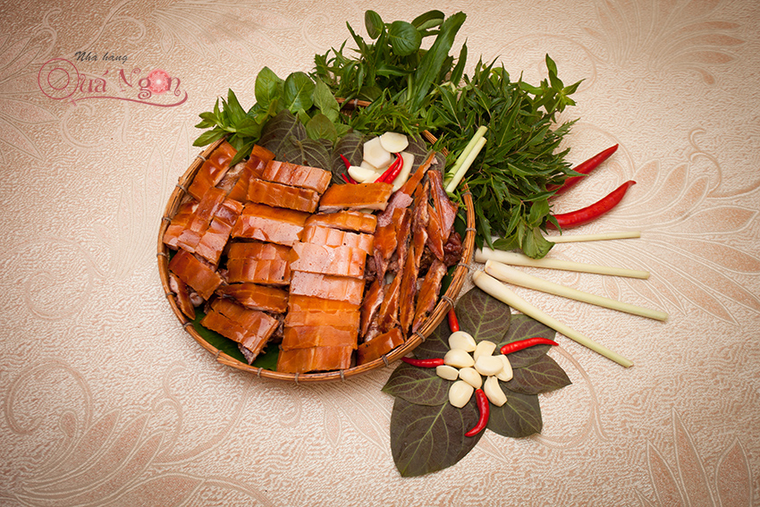

Heo tộc quay lu chặt mẹt

Một trong những món ăn dân dã ngon nhất Việt Nam chính là heo tộc quay lu chặt mẹt, nó đã trở thành biểu tượng ẩm thực tại Nhà hàng Quá Ngon.
Heo tộc là heo gì ?
Heo tộc là một giống heo thả rong ở miền núi thường chỉ nặng từ 2 – 3 kg. Vì được thả rong nên heo hoạt động nhiều và thức ăn của heo 100% là rau củ nên thịt ít mỡ, săn chắc, ngọt và rất ngon.
Bí quyết làm nên món ăn dân dã ngon nhất Việt Nam
Bí quyết đầu tiên nằm ở quy trình chọn heo, heo muốn ngon phải chọn những con có cân nặng trung bình, không mập quá cũng không ốm quá, heo phải có mõm dài, lông dựng ngược, lưng võng, những con như vậy thường có thịt săn chắc, ít mỡ, thơm ngon.
Bí quyết thứ hai chính là công thức tẩm ướp đặc biệt, trao đổi về vấn đề này, anh Nguyễn Chí Thành – bếp trưởng Nhà hàng Quá Ngon nói: “Heo được tẩm ướp bằng những gia vị thông thường kèm theo đó là bí quyết độc nhất của Nhà hàng Quá Ngon mà không thể bật mí được”, không biết có phải bởi bí quyết “không thể bật mí” đó mà món heo tộc quay lu chặt mẹt tại Nhà hàng Quá Ngon luôn có một hương vị đặc trưng, thơm ngon mà không nơi nào có được.
Bí quyết thứ ba chính là công đoạn chế biến kì công, heo sau khi được tẩm ướp sẽ cho vào lu nướng và quay chín vàng. Nướng là món ăn ngon và hấp dẫn nhưng khi nướng trực tiếp trên than sẽ không tốt cho sức khỏe và dễ bị cháy xém do lửa táp. Nướng lu lại hoàn toàn khác, thịt được làm chín bằng khí nóng và không khí luôn luân chuyển trong lòng lu giúp miếng thịt vàng đều và có vị thơm ngon.
Thưởng thức món ngon từ heo tộc
Món ăn được trình bày trên chiếc mẹt tre lót lá chuối đậm chất quê hương, màu xanh của lá chuối làm tôn lên màu vàng đượm, bóng bẩy của thịt heo. Vị ngọt nguyên thủy và hương thơm lừng tỏa của thịt heo quyện với vị mặn mà của mắm tôm; vị chua, chát của rau rừng, lá cóc; vị cay nồng của củ riềng, sả cây; kết hợp cùng độ giòn rụm, thơm của lớp da bên ngoài khi đưa vào miệng tạo nên hương vị đặc biệt không chỉ đánh thức thị giác mà còn đánh thức cả khứu giác, vị giác của thực khách. Chính vì vậy món ăn này đã “gây nghiện” cho không ít thực khách.
Nhiều thực khách đến với Quá Ngon bị ấn tượng bởi món đặc sản trứ danh Heo tộc quay lu chặt mẹt. Ai đã từng thưởng thức món này tại nhà hàng Quá Ngon sẽ không tìm thấy ở bất kì nơi đâu có được hương vị thơm ngon đặc trưng tương tự. Vì vậy có nhiều thực khách ở xa khi có dịp ghé thăm TP.HCM đều cố gắng sắp xếp thời gian đến nhà hàng Quá Ngon để thưởng thức cho bằng được món ngon độc đáo này.
Khi đến thưởng thức Quý thực khách nên điện thoại đặt trước để không phải mất thời gian chờ đợi. Trung bình thời gian để làm món heo tộc này khoảng 45 phút. Một nhóm khách đi từ 3 – 4 người là có thể kêu một con heo làm 3 món: Quay lu chặt mẹt, lòng dồi luộc, sáo măng hoặc nấu nhựa mận.